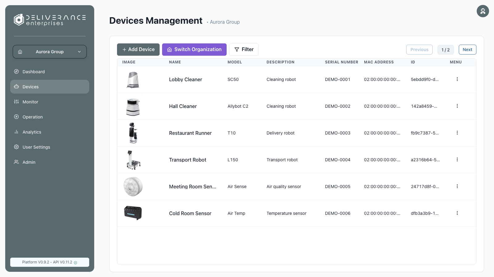
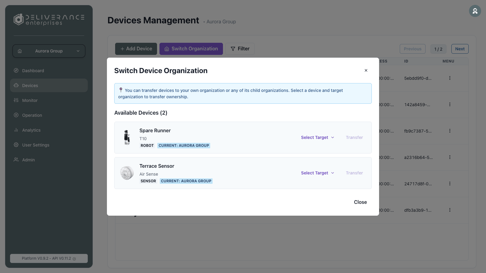
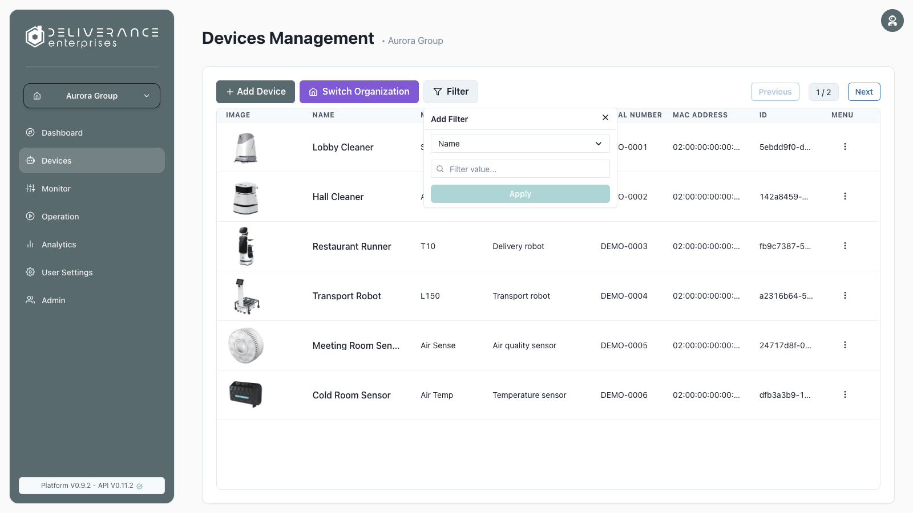
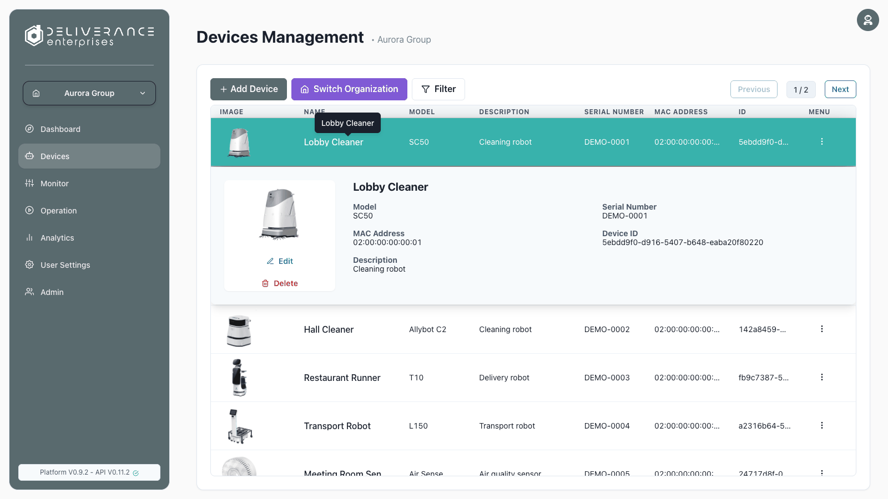
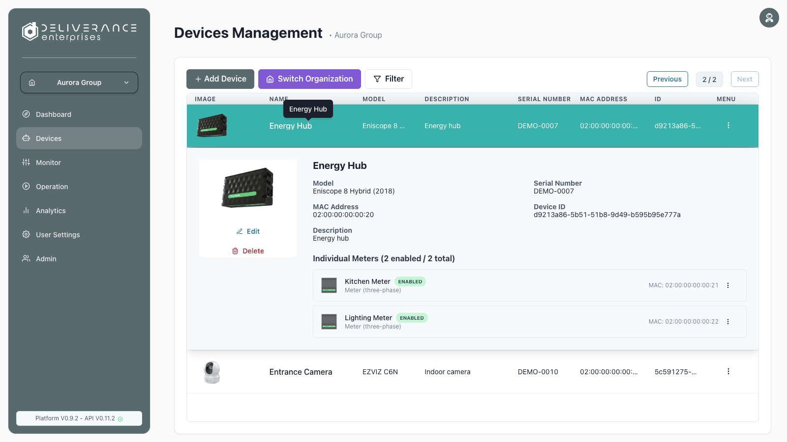
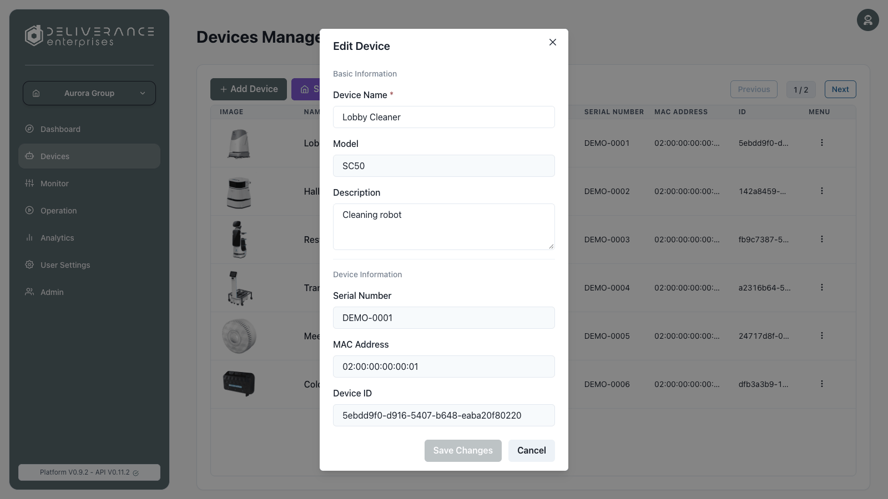

Devices: Gestión de dispositivos¶
Habilita y gestiona dispositivos entre organizaciones.

Cada fila muestra imagen, nombre, modelo, descripción, número de serie, dirección MAC e ID. El menú de la fila permite editar o deshabilitar el dispositivo.
Activar un dispositivo¶

+ Add Device abre la lista de dispositivos que pertenecen a la organización pero están deshabilitados. Al activarlos (Enable, o Enable All Devices para todos) aparecen en el Dashboard, Monitor y Analytics.
Asignar un dispositivo a otra organización¶

Switch Organization (solo administradores) transfiere un dispositivo a la organización propia o a una de sus hijas: se elige el destino en Select Target y se confirma con Transfer. Al transferir un hub se transfieren también sus medidores.
Filtrar el listado¶

Filter acota la lista por Name, Model, Serial Number, MAC Address, Description o ID.
Detalle de dispositivo¶

Al seleccionar una fila se despliega su ficha con las acciones Edit y Delete. Un dispositivo que ya tiene datos no se puede eliminar: hay que deshabilitarlo.
Hubs y medidores de energía¶

La ficha de un hub lista sus medidores (Individual Meters), que se pueden editar y habilitar por separado o todos a la vez. Deshabilitar un hub deshabilita sus medidores.
Editar un dispositivo¶

Se pueden cambiar el nombre y la descripción. En los medidores, además, el cableado (Wiring: monofásico o trifásico) y el nombre de cada canal (Channel names).